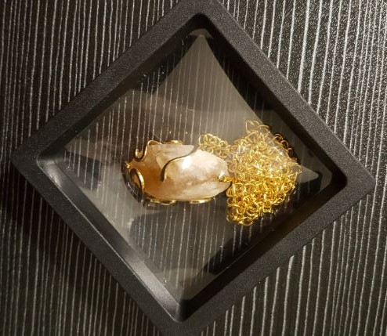
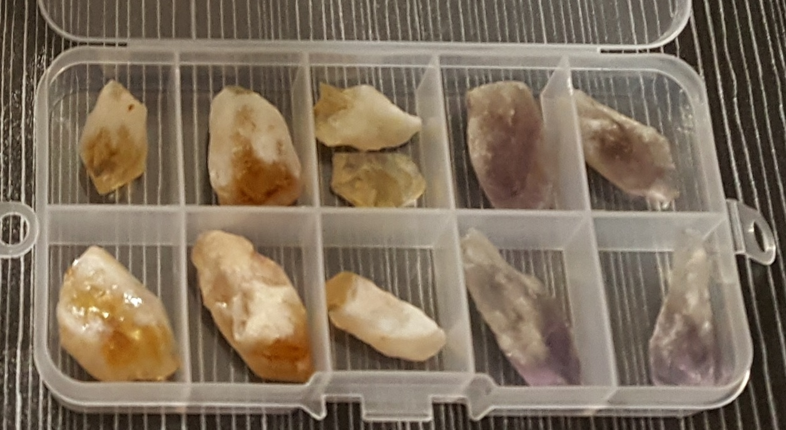

Il quarzo citrino è una varietà macrocristallina e giallo-dorata del quarzo, con formula SiO₂ (biossido di silicio). Il suo caratteristico colore, che spazia dal giallo tenue all’ambra intenso fino al bruno-dorato, è dovuto principalmente a impurezze di ferro (Fe³⁺) in specifici stati di ossidazione, spesso associate a tracce di alluminio o centri di colore legati a radiazioni naturali. Gran parte del citrino in commercio deriva da un trattamento termico controllato dell’ametista o del quarzo fumè, ma esistono pregiati esemplari di citrino naturale.
I cristalli di citrino si formano in ambienti idrotermali e in pegmatiti granitiche, spesso associati a tormalina, feldspati e altri quarzi. Il termine “citrino” deriva dal francese citron (limone), in riferimento alla sua vivace tonalità gialla. Come tutte le varietà di quarzo, è resistente agli agenti atmosferici e viene utilizzato sia in gemmologia che in pratiche energetiche.
Noto nell’antichità come “pietra del mercante”, veniva spesso tenuto nei portamonete o nelle casse dei negozi come buon auspicio di successo economico. Simbolo di abbondanza e attrazione della ricchezza materiale, il citrino accompagna da secoli chi cerca prosperità, intraprendenza e fortuna negli affari.
Nell'ambito della cristalloterapia il quarzo citrino è la pietra dell’energia, in particolare quella solare, della vitalità, della chiarezza mentale, della prosperità e dell’abbondanza. La sua vibrazione calda e luminosa stimola l’ottimismo e la forza di volontà.
Tradizionalmente è spesso descritto come una pietra ‘auto purificante’, capace di mantenere una vibrazione luminosa e solare senza bisogno di frequenti ricariche. Se posizionata sul terzo chakra (plesso solare) stimola l'energia, la volontà e la vitalità.

Il quarzo citrino è da sempre considerato un potente alleato per chi desidera attrarre successo, realizzazione e gioia di vivere. La sua energia dorata stimola il plesso solare, centro dell’azione e della fiducia in se stessi. Grazie alla sua presunta capacità “auto purificante”, il citrino non accumula vibrazioni negative, rimanendo sempre chiaro e attivo come un piccolo sole portatile.
Nelle pratiche antiche e moderne, viene utilizzato per allontanare la sensazione di stanchezza cronica, per rafforzare la concentrazione e per favorire decisioni lucide in campo professionale. È una pietra che invita all’ottimismo concreto, al senso di abbondanza e all’autostima.
- Attrae prosperità e successo
- Stimola chiarezza mentale
- Rafforza volontà e determinazione
- Porta ottimismo e vitalità
- Nel portafoglio o vicino alla cassa
- Sul plesso solare durante la meditazione
- In ufficio per favorire concentrazione
- Come gioiello per energia quotidiana
“Noto nell'antichità come 'pietra del mercante', veniva spesso tenuta nei portamonete o nelle casse dei negozi come buon auspicio di successo economico.
Nell'ambito della cristalloterapia il quarzo citrino è la pietra dell'energia, in particolare quella solare, della vitalità, della chiarezza mentale, della prosperità e dell'abbondanza. Tenuto sulla scrivania dona energia e dinamicità sul lavoro.
Tradizionalmente è spesso descritto come una pietra ‘auto purificante’, capace di mantenere una vibrazione luminosa e solare.
Se posizionata sul terzo chakra (plesso solare) stimola l' energia, la volontà e la vitalità.”

Purezza e cura
Pulisci il citrino con acqua tiepida e sapone neutro. A differenza di altre gemme, è considerato “auto purificante”, ma puoi ricaricarlo alla luce solare del mattino per esaltarne la vibrazione dorata. Evita sbalzi termici.
Giacimenti e varietà
Citrino naturale si trova in Brasile, Madagascar, Russia e Spagna. Il citrino “Madeira” presenta una tonalità arancio-rossastra, molto apprezzata in gemmologia. Spesso confuso con il topazio imperiale, ma se ne differenzia per durezza e peso specifico.
Scienza e simbolo
La mineralogia conferma l’origine del colore tramite impurezze di ferro e trattamenti termici; la tradizione lo associa al successo e alla forza vitale. Un perfetto esempio di come una gemma possa unire chimica e immaginario positivo.